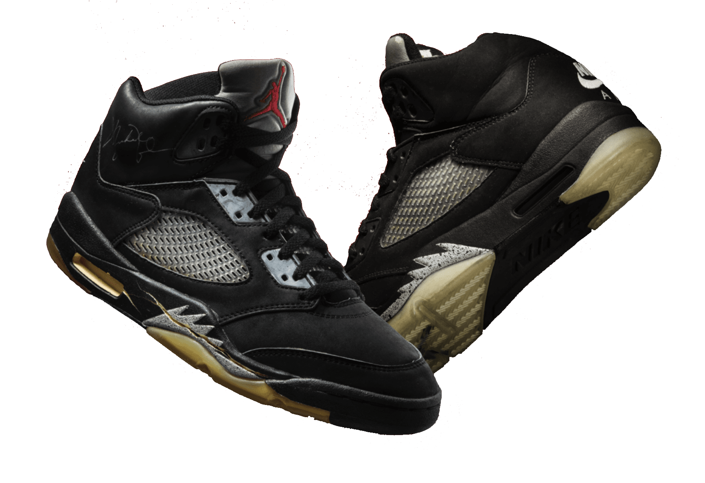
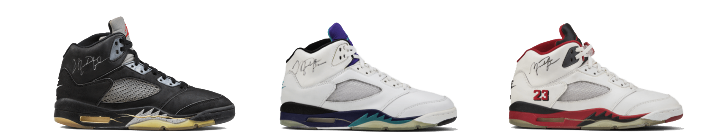
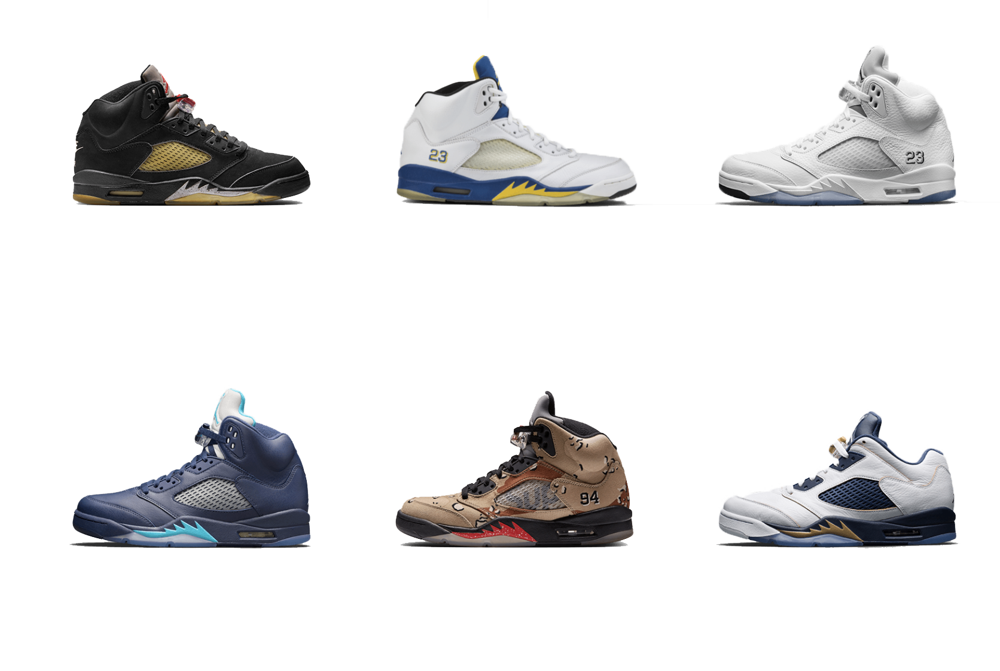
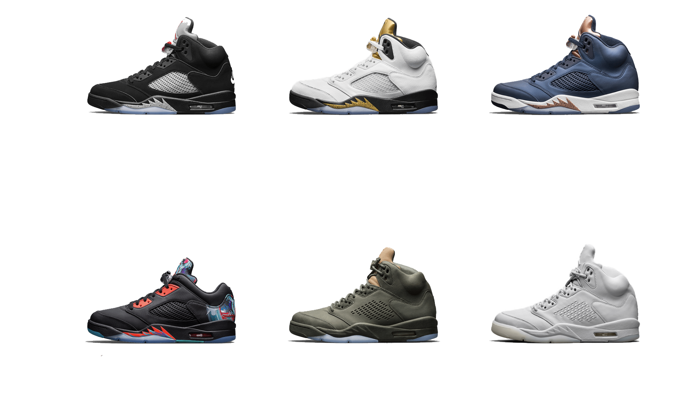
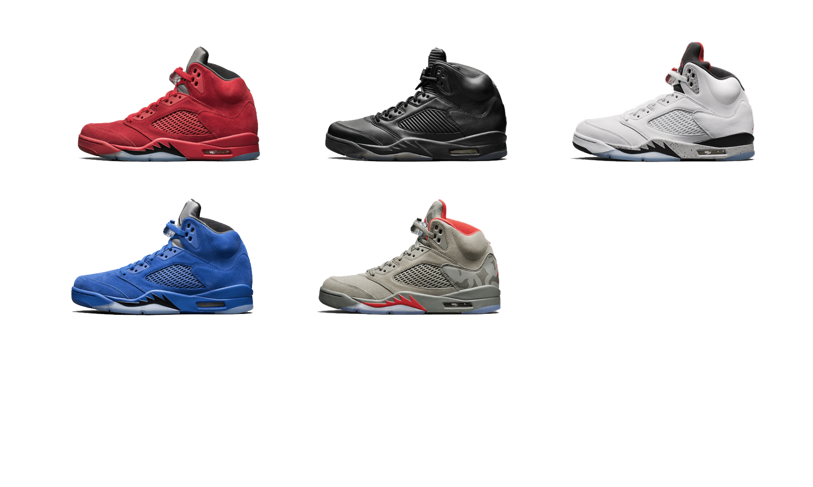

In his 1989 — 1990 season, it was clear that MJ was better than ever. Setting a points per game personal record, he drained 69 points against Cleveland. He hit 92 three-pointers, compared to only 68 in all prior seasons combined. Every aspect of MJ’s game was flawless, but it was his dogfight-like flight that separated him from every other player on the planet.
Tinker Hatfield took inspiration from Jordan’s biting style and, likening it to an American WWII fighter plane, he designed the Air Jordan V with shark-tooth shapes on the midsole. Paired with a clear outsole, the shoe a imbued a ferocity reminiscent of its relentless muse.




